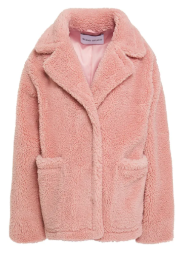
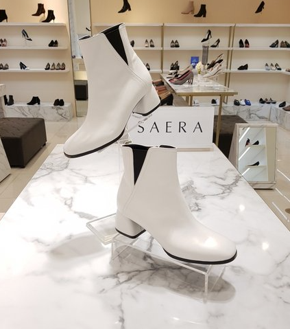

코로나시대 다들 무탈하신가요.
정말 이상한 2020년이 끝나가고 있습니다.
가끔 내가 살아있는 동안 3차대전이나 세계적으로 큰 사건이 일어날려나 싶었는데
그 사건이 이런식으로 다가올줄 몰랐어요.
여행을 가지못하고 공연, 갤러리 방문 횟수가 줄어든것 외에 일적으로는 오히려 작년보다 좋았습니다.
9월말 영국회사 잡오퍼를 받아 지금 이 시국에 유럽에 다시 들어가야하냐 말아야하냐를 미친듯 고민하고 있는 와중
한국회사 한곳에 오퍼를 더 받게 되어 한국회사로 결정했습니다. (aka 자본주의의 노예........포킹 캐피탈리즘 만세!!)
10월 11월 머리쥐나게 고민하느라 힘들었어요.
영국회사를 가게되면 내년초였는데
잡오퍼를 받고 제일먼저 든 생각은 웃기게도 '헉....사놓고 안읽은 종이책 어떻게 하지? 다시 팔고 이북으로 재구매해야하나?' 였습니다 ㅋㅋㅋㅋㅋㅋㅋㅋㅋㅋ 그외 만약 가게되면 이번에는 겁나 미니멀하고 험블하게 살아보겠어!! 라고 주변사람들에게 말하자 다들 단박에 절 비웃었으며 ㅋㅋㅋㅋ 이를 실천하고자 부지런히 당근마켓에 물건을 내놓았었습니다.
11월말에 한국회사로 결정하고 12월 1일 새로운 곳으로 옮겼으며
집도 하나 샀습니다. 나도 이제 집주인 희희희
만약 영국에 가게되면 /또는/ 한국에남게되면
이 모든 경우의 수를 생각해 보느라 어벌벌하고 상황이 정해진게 없으니 쇼핑도 안/못하고 있던 와중 한국에 남기도 결정하면서 12월초 지름신이 강림하셨습니다.
코로나가 확실히 생활에 영향을 주는게 올해 색조화장품을 거의 사지 않았어요;; 난 사용안해도 패키지 예쁘고 캠페인 맘에들면 호기심에 사보는 사람이었는데;;; 그런 와중 에이 언제 내가 사용빈도 따지면서 구매했냐 사고싶으니까 사는거지 - 싶어서 12월에 립스틱 3개 호로록 질렀습니다 :3 (정신줄 놓았다는 소리 ㅋㅋㅋ)
뭘 정신없이 사제꼈나 기록차 남겨보는 구매 리스트 입니다.
Stand Studio Marina Faux shearling jacket

작년 요 브랜드 노랑이 코트를 구입해서 엄청 잘 입고 다녀서
올해 분홍색 숏코트 하나 더 주문했습니다. 배송 언능와라//
3CE 벨벳립틴트 - 다포딜
3CE 클라우드립틴트 - 마카롱레드
올리브영서 세일하길래....;;
마스크쓰고 다니면서 제일 잘 사용한 립은 3CE 입니다.
사실 올해는 3CE외 다른 제품은 거의 사용하지 않았네요.
다포딜은 얼굴에 올리니 얼굴이 칙칙해보여서 후회중입니다;; 거울 준다길래 낚여서 샀건만 ㅋㅋ
누드톤, 차분학 색 너무 안어울려요 ㅜㅜ 무조건 쨍한색!!
바비브라운 수딩 클렌징 오일
한통 다 비워서 재구매했습니다. 기본 사이즈 거진 일년가까이 사용했는데 대용량 구매하라는 꼬심에 넘어가 큰사이즈로 사왔어요.
& 맨얼굴로 다니는거에 대해 아무생각이 없다가 또 어느순간 거울보면 어;; 뭐라도(?) 해야겠다 - 란 생각이 들때가 있습니다;;
그럴때 주로 립스틱을 샀지만 이제 마스크를 쓰고다니니 의미가없어서 이번엔 브라우제품을 구매해봤습니다 ^^;;
바비브라운 브라우 펜슬(새들)을 잘 쓰고있는데 요 색상과 어울리는 브라우 쉐이퍼 추천해 달라고 해서 구매한
내추럴 브라우 쉐이퍼 - 리치 브라운
그리고 매장서 구경하다가 한눈에 반해 구매한
럭스 디파이닝 립스틱 - 볼드 바로크
이런 쨍한 핑크색 넘 좋아요// 맥 임패션드 생각나네용
옷이건 가방이건 죄다 깜장만 사는사람인데 무뜬금 '흰색 첼시부츠가 갖고싶어!!' 란 생각에
백화점, 온라인을 뒤지다가 구매한 세라 첼시부츠

ASOS 에서 옷도 사고
11월말에 한 빠마가 마음에 들지 않아 열흘만에 다시 미용실에 방문해 컬 넣은 부분을 죄다 쳐내는 짓도 했으며(....)
유일하게 모으는 쥬얼리는 반지였는데 손을 자주 씻어야 하니 귀찮아서(....) & 외출할 일 자체가 적어져서 반지도 못하니
갑자기 귀를 뚫고싶다는 마음에 토욜날 충동적으로 귀걸이를 다시 구매했습니다. 거진 10년넘게 귀걸이를 안한거 같은데 여전히 구멍이 막히지 않고 잘 있네용. 2 / 3 개를 왼쪽귀에 2개 더 뚫어 4 / 3 개로 만들고 스터드뿅뿅 박아 나왔습니다.
.......역시 돈쓰는게 최고야 재밌어..........ㅋㅋㅋㅋㅋㅋㅋ
주말 신나게 놀았으니 다시 로동하며 일상을 이어 나가렵니다 :)